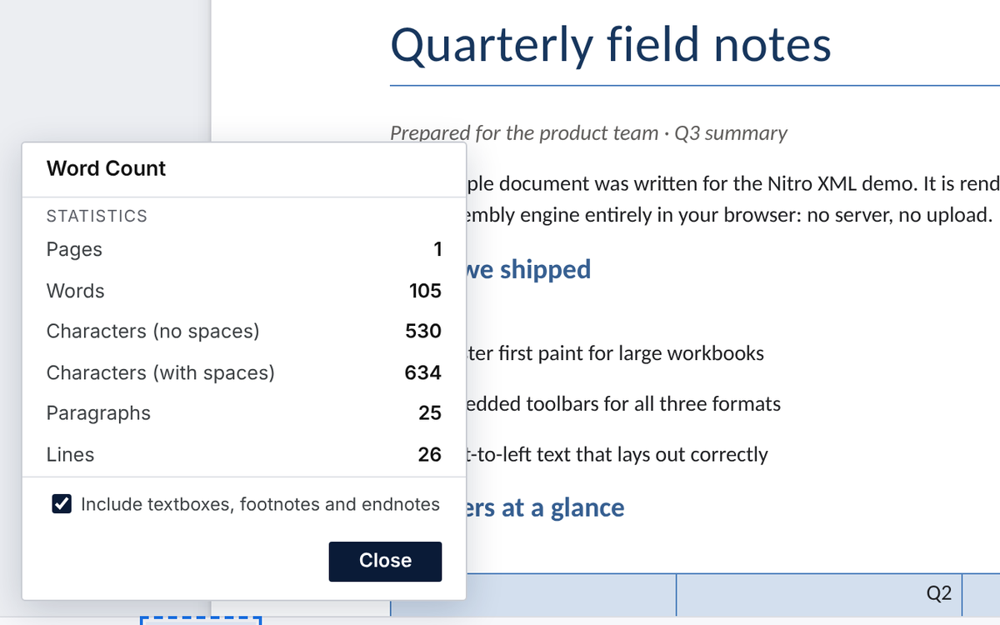

MOCKUPSee the word count in the status bar, with Word's Word Count box on click
Word shows a live word count at the bottom left of every document, and anyone writing to a length limit checks it constantly.
Open issue #546 to vote
Approve: tap 👍 on the issue · Decline: tap 👎